Description
- Budget : 20,000 €
- Durée du séjour : 7 jours
- Zone Geographique: Europe de l'est
- Activités adaptées à tous les participants
- Une demi-jounée de temps libre
- Une demi-journée de sport
Le diagramme de Gantt des procedures


Pays Choisi
Pays : République Tchèque
Ville : Prague
Raisons du choix : Peu cher, l'arcitecture distincte de ce qu'on connais ou encore la culture unique du pays
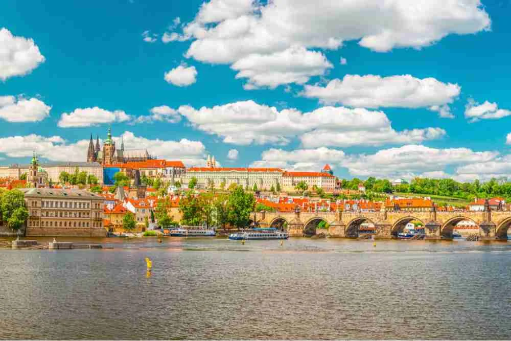
Transport
Aller
- Mode de transport: Avions
- Lieu de départ: Aéroport d'Orly
- Date et horaire de départ: 8 Juin 2025 à 17h45
- Lieu d'arrivée: Aéroport de Prague-Václav-Havel
- Horaire d'arrivée: 19h25
- Le coût par personne: 69€
Retour
- Mode de transport: Avions
- Lieu de départ: Aéroport de Prague-Václav-Havel
- Date et horaire de départ: 15 Juin 2025 à 10h05
- Lieu d'arrivée: Aéroport d'Orly
- Horaire d'arrivée: 12h00
- Le coût par personne: 45€
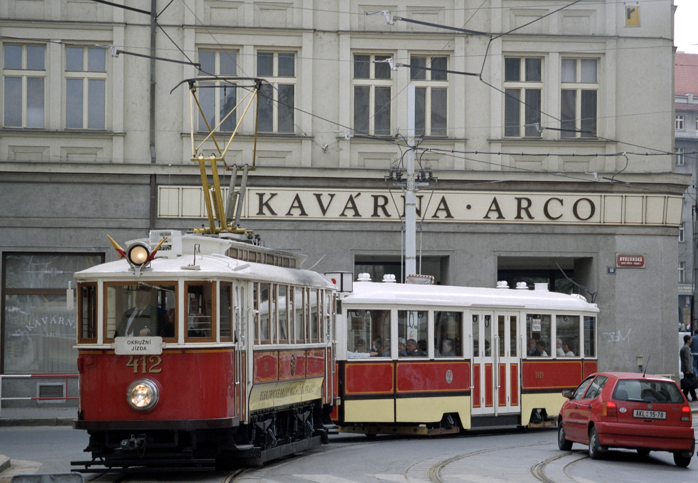
Repartition du budget
| Source de depense | Prix unitaire | Prix final (ttc) |
|---|---|---|
| Transport vers l'aeroport | 700€ par trajet | 1400€ |
| Billet Aller | 69€ par personnes | 1932€ |
| Billet Retour | 45€ par personnes | 1260€ |
| Hebergement |
|
4347€ |
| Transport sur place | 15.80 € pour trois jours et par personnes | 884,8 € |
| Nourriture | Pas de prix fix | 1 500€ |
| Activité | Detaillé sur le planing | 8091.72€ |
| Total: | 19 415,52€ |
Hebergement
Type d'hebergement: Auberge de Jeunesse
Nom de l'hebergement: Auberge Clown and Bard
Adresse: Bořivojova130 00 Praha 3, Tchéquie
Filles
- Une Chambre de 6
Garcons
- Une chambre de 3
- Une chambre de 4
- Deux chambre de 6
Accompagnants
- Une Chambre de 3
Pour chaque chambre le petit déjeuné est inclue et elles possèdent leurs propre salle de bain
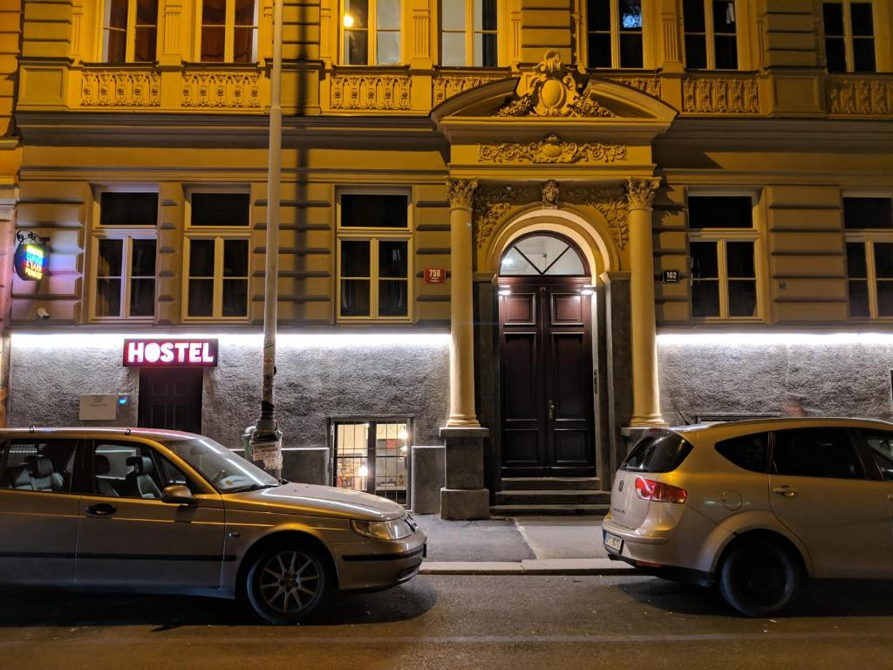
Activités Proposées
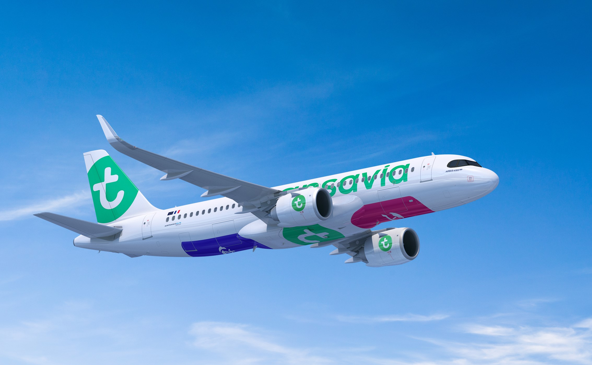
Planing du Jour du depart
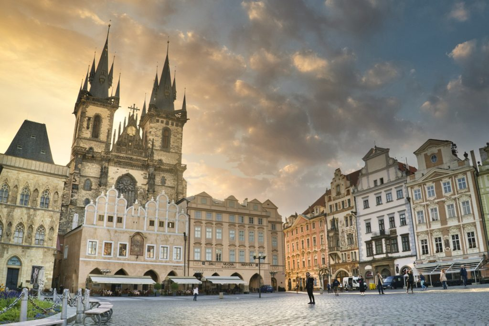
Planing du Jour 1
Planing du Jour 2
Planing du Jour 3
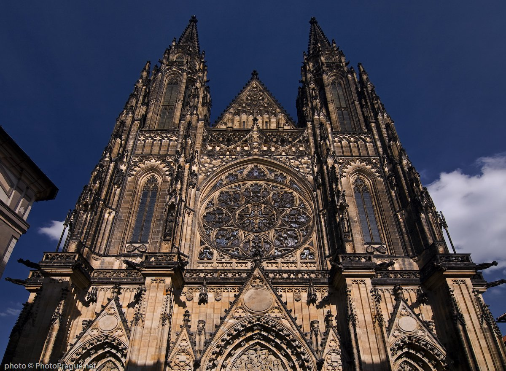
Planing du Jour 4
Planing du Jour 5
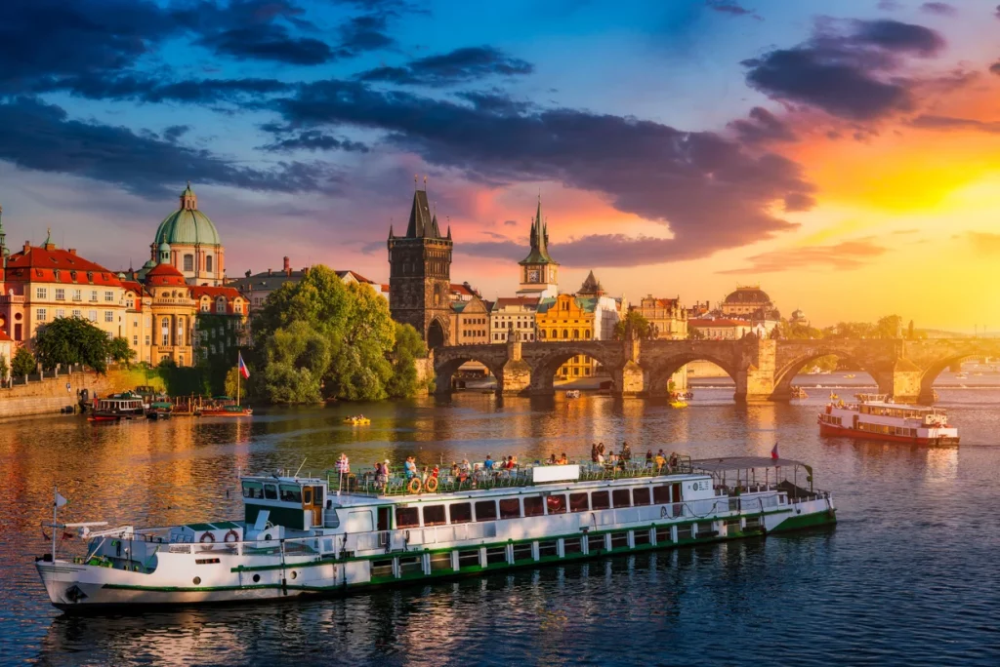
Planing du Jour 6

Planing du Jour du retour
Planing Complet
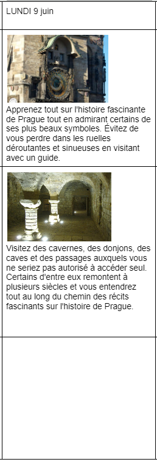
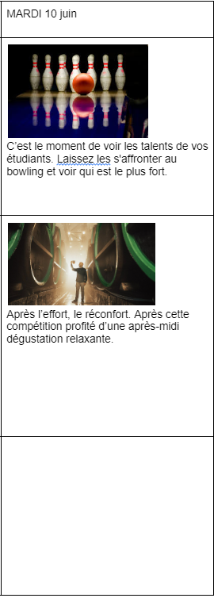
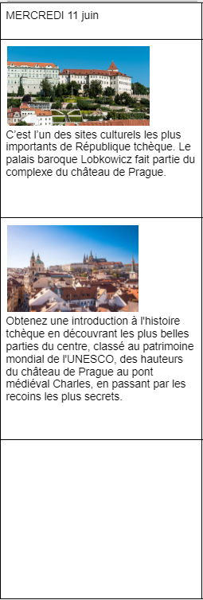
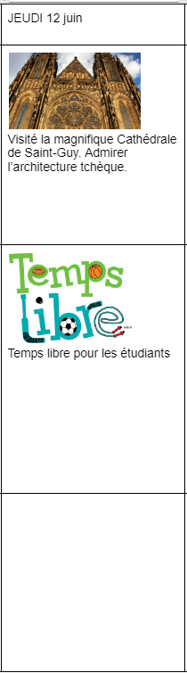
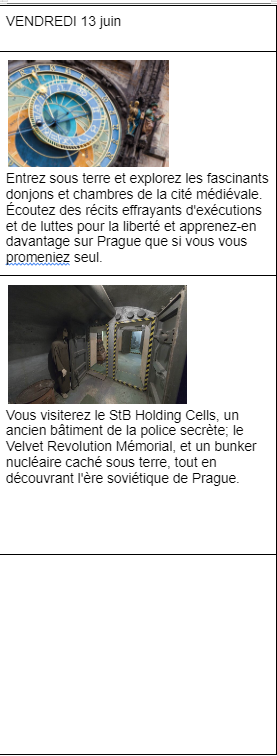
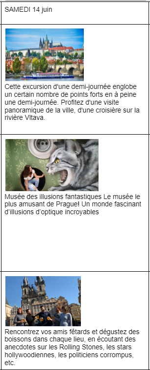
Les risques du voyages
Un voyage pédagogique à l'étranger présente naturellement certain risque:
- Les catastrophes naturelles ou imprévus : Incendies, intempéries, tremblements de terre, etc
- Annulations de dernière minute : Les annulations peuvent entraîner des pertes financières, surtout si les frais ne sont pas remboursables.
- Sécurité alimentaire : Risques d’intoxications alimentaires ou de régimes alimentaires non déclarés
Il existe évidemment pour éviter ou limiter le plus possible ces risques:
-
- Étudier les conditions météorologiques et les risques naturels de la région à visiter.
- Informer les étudiants et les acommpagnateurs des consignes de sécurité (points de rassemblement, comportements à adopter).
-
- Contracter une assurance voyage qui couvre les frais liés à des annulations pour raisons médicales, catastrophes naturelles, ou autres imprévus.
- Prévoir des solutions alternatives (changement de date ou d’activité) pour éviter l'annulation complète.
-
- Avoir une trousse de premiers secours incluant des traitements pour les troubles digestifs légers.
- Former les accompagnateurs à détecter les signes d'intoxication alimentaire (ex. : nausées, vomissements).